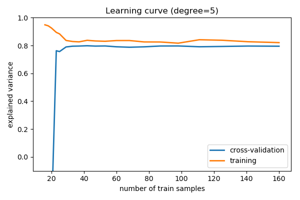

Note
Click here to download the full example code
3.6.10.16. Bias and variance of polynomial fit¶
Demo overfitting, underfitting, and validation and learning curves with polynomial regression.
Fit polynomes of different degrees to a dataset: for too small a degree, the model underfits, while for too large a degree, it overfits.
import numpy as np
import matplotlib.pyplot as plt
def generating_func(x, err=0.5):
return np.random.normal(10 - 1. / (x + 0.1), err)
A polynomial regression
from sklearn.pipeline import make_pipeline
from sklearn.linear_model import LinearRegression
from sklearn.preprocessing import PolynomialFeatures
A simple figure to illustrate the problem
n_samples = 8
np.random.seed(0)
x = 10 ** np.linspace(-2, 0, n_samples)
y = generating_func(x)
x_test = np.linspace(-0.2, 1.2, 1000)
titles = ['d = 1 (under-fit; high bias)',
'd = 2',
'd = 6 (over-fit; high variance)']
degrees = [1, 2, 6]
fig = plt.figure(figsize=(9, 3.5))
fig.subplots_adjust(left=0.06, right=0.98, bottom=0.15, top=0.85, wspace=0.05)
for i, d in enumerate(degrees):
ax = fig.add_subplot(131 + i, xticks=[], yticks=[])
ax.scatter(x, y, marker='x', c='k', s=50)
model = make_pipeline(PolynomialFeatures(d), LinearRegression())
model.fit(x[:, np.newaxis], y)
ax.plot(x_test, model.predict(x_test[:, np.newaxis]), '-b')
ax.set_xlim(-0.2, 1.2)
ax.set_ylim(0, 12)
ax.set_xlabel('house size')
if i == 0:
ax.set_ylabel('price')
ax.set_title(titles[i])

Generate a larger dataset
from sklearn.model_selection import train_test_split
n_samples = 200
test_size = 0.4
error = 1.0
# randomly sample the data
np.random.seed(1)
x = np.random.random(n_samples)
y = generating_func(x, error)
# split into training, validation, and testing sets.
x_train, x_test, y_train, y_test = train_test_split(x, y, test_size=test_size)
# show the training and validation sets
plt.figure(figsize=(6, 4))
plt.scatter(x_train, y_train, color='red', label='Training set')
plt.scatter(x_test, y_test, color='blue', label='Test set')
plt.title('The data')
plt.legend(loc='best')

Plot a validation curve
from sklearn.model_selection import validation_curve
degrees = np.arange(1, 21)
model = make_pipeline(PolynomialFeatures(), LinearRegression())
# The parameter to vary is the "degrees" on the pipeline step
# "polynomialfeatures"
train_scores, validation_scores = validation_curve(
model, x[:, np.newaxis], y,
param_name='polynomialfeatures__degree',
param_range=degrees)
# Plot the mean train error and validation error across folds
plt.figure(figsize=(6, 4))
plt.plot(degrees, validation_scores.mean(axis=1), lw=2,
label='cross-validation')
plt.plot(degrees, train_scores.mean(axis=1), lw=2, label='training')
plt.legend(loc='best')
plt.xlabel('degree of fit')
plt.ylabel('explained variance')
plt.title('Validation curve')
plt.tight_layout()

Learning curves¶
Plot train and test error with an increasing number of samples
# A learning curve for d=1, 5, 15
for d in [1, 5, 15]:
model = make_pipeline(PolynomialFeatures(degree=d), LinearRegression())
from sklearn.model_selection import learning_curve
train_sizes, train_scores, validation_scores = learning_curve(
model, x[:, np.newaxis], y,
train_sizes=np.logspace(-1, 0, 20))
# Plot the mean train error and validation error across folds
plt.figure(figsize=(6, 4))
plt.plot(train_sizes, validation_scores.mean(axis=1),
lw=2, label='cross-validation')
plt.plot(train_sizes, train_scores.mean(axis=1),
lw=2, label='training')
plt.ylim(ymin=-.1, ymax=1)
plt.legend(loc='best')
plt.xlabel('number of train samples')
plt.ylabel('explained variance')
plt.title('Learning curve (degree=%i)' % d)
plt.tight_layout()
plt.show()

- 

Total running time of the script: ( 0 minutes 1.423 seconds)